▲ 테슬라 인도의 98.3%를 차지한 모델 3·Y 중 모델 Y(주니퍼) ⓒ OWS Photography (Wikimedia Commons, CC BY 4.0)
"Wall Street was too low again." 테슬라가 10월 2일(현지시간) 공개한 2026년 3분기 인도량은 486,532대였다. 회사가 게시한 월가 컨센서스 461,974대(24명)를 24,558대(5.3%) 웃돌았고, 발표 전 추정치가 6만 대 갈린다고 정리했던 기사의 최고 추정(JP모건 482,000대)마저 넘었다. 다만 전년 같은 분기(497,099대)보다는 2.1% 적다. 이 글은 발표 직전 기사에서 적어 둔 추정치와 실제 결과를 대조하고, 생산-인도 격차(재고 증감)와 분기별 추이를 카프리즘이 직접 계산해 정리한 사후 분석이다.
1. 공식 발표 수치 — SEC 8-K에서 직접 확인한 값
테슬라는 분기 생산·인도·배치 실적을 SEC에 8-K(exhibit 99.1)로 제출한다. 카프리즘은 이 문서를 직접 열어 수치를 확인했다. 테슬라 IR 사이트(ir.tesla.com)는 10월 3일 다시 시도했지만 접속 제한(403)으로 열지 못했고(CNBC도 앞서 같은 제한), 대신 8-K 본문에서 "3분기에 46만 4천 대 넘게 생산하고 48만 6천 대 넘게 인도했으며 13.7GWh의 에너지 저장 제품을 배치했다"는 요지의 문장을 확인했다. 같은 숫자가 Electrek·Not a Tesla App·The Motley Fool 보도에서도 일치했다. 8-K에는 "차량 생산·인도 수치는 고객에게 판매된 승용차를 뜻하며 일부 인도는 운용리스 회계 처리 대상"이라는 설명과, 인도·저장장치 배치량은 "분기 재무 실적의 지표로 의존해서는 안 되는 두 가지 척도일 뿐"이라는 면책 문구도 들어 있다. 영어 원문은 "Tesla vehicle deliveries and storage deployments represent only two measures of the Company's financial performance and should not be relied on as an indicator of quarterly financial results."이며, 8-K 열람으로 재확인했다. 이 문서의 원문은 아래 버튼으로 열 수 있다. SEC 8-K 바로가기
| 구분 | 생산 | 인도 | 인도-생산 |
|---|---|---|---|
| 모델 3·Y | 457,387 | 478,237 | +20,850 |
| 기타 모델(사이버트럭·세미 등) | 7,004 | 8,295 | +1,291 |
| 합계 | 464,391 | 486,532 | +22,141 |
| 에너지 저장 배치 | - | 13.7GWh | - |
모델 3·Y 합계와 기타 모델 합계가 전체와 정확히 맞는지 확인했다. 457,387+7,004=464,391, 478,237+8,295=486,532로 일치한다. 기타 모델에는 사이버트럭, 세미, 그리고 남은 모델 S·X 재고가 포함된다고 Electrek은 설명했다.
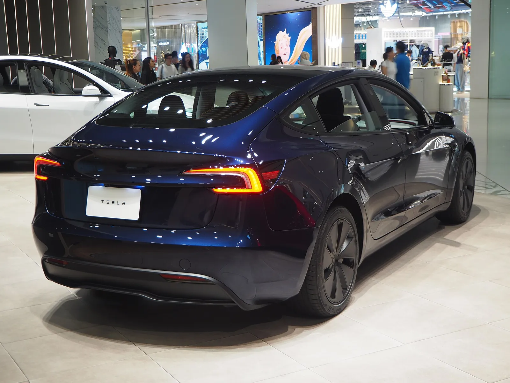
▲ 모델 3(하이랜드) 후면. 모델 3·Y는 3분기 인도의 98.3%(478,237대)를 차지했다. 전시 환경에서 찍은 사진으로 이번 인도 실적과 직접 관련은 없다 ⓒ Chanokchon (Wikimedia Commons, CC BY-SA 4.0)
2. 생산보다 22,141대 더 팔았다 — 재고 증감 계산
인도량에서 생산량을 빼면 그 분기에 재고가 늘었는지 줄었는지 대략 알 수 있다. 다만 이동 중인 차량, 법인·리스 차량, 지역 간 이동이 있어 이 차이가 곧 정확한 재고 증감은 아니다. 테슬라가 재고 수치를 직접 공개하지 않으므로 어디까지나 "생산-인도 격차"로 읽어야 한다. 카프리즘이 2026년 1~3분기를 계산했다.
| 분기 | 생산 | 인도 | 인도-생산 | 해석 |
|---|---|---|---|---|
| 1분기 | 408,386 | 358,023 | -50,363 | 생산이 인도보다 많아 재고 약 5만 대 쌓임 |
| 2분기 | 451,758 | 480,126 | +28,368 | 재고 감소 |
| 3분기 | 464,391 | 486,532 | +22,141 | 재고 감소 |
| 1~3분기 합계 | 1,324,535 | 1,324,681 | +146 | 사실상 상쇄(누적 격차 146대) |
1분기에 쌓인 50,363대가 2·3분기에 합쳐 50,509대 줄면서 누적 격차는 146대로 사라졌다. Electrek이 "1분기에 만든 초과 약 5만 대를 2·3분기에 소화했다"고 쓴 내용과 카프리즘 계산이 맞는다. 즉 올해 3분기까지 테슬라는 만든 만큼 판 계산이다(2025년 연말 재고 규모는 이 글에서 확인하지 못했다).
2-1. 모델 3·Y와 기타 모델로 나눠 본 2·3분기 격차
합계 격차를 차종군별로 나누면 재고를 줄인 주체가 더 분명해진다. 2분기 수치는 Electrek의 2분기 인도 기사, 3분기 수치는 SEC 8-K 기준이고 격차(인도-생산)는 카프리즘 계산이다.
| 분기·구분 | 생산 | 인도 | 인도-생산 | 격차÷인도 |
|---|---|---|---|---|
| 2분기 모델 3·Y | 442,936 | 467,762 | +24,826 | 5.3% |
| 2분기 기타 | 8,822 | 12,364 | +3,542 | 28.6% |
| 3분기 모델 3·Y | 457,387 | 478,237 | +20,850 | 4.4% |
| 3분기 기타 | 7,004 | 8,295 | +1,291 | 15.6% |
| 2·3분기 합계 | 916,149 | 966,658 | +50,509 | 5.2% |
계산 방식은 "격차÷인도 = (인도-생산)÷인도"다. 3·Y는 2분기 24,826대, 3분기 20,850대로 두 분기 합 45,676대를 인도가 생산보다 더 많이 가져갔고, 기타는 4,833대다(둘을 더하면 앞 표의 50,509대와 일치). 3·Y 생산은 2분기 대비 3.3% 늘어난 반면 기타 생산은 20.6%, 기타 인도는 32.9% 줄었다. 3·Y 생산 457,387대를 전년 3분기 추정치 435,826대(전체 447,450대에서 기타 11,624대를 뺀 값)와 비교하면 +4.9%다. 기타 모델은 격차가 인도의 15.6%에 이를 만큼 생산보다 재고 소진 비중이 높은데, Electrek이 기타 모델에 "남은 모델 S·X 재고"가 들어 있다고 한 설명과 방향이 맞는다(원인 단정은 아님). Not a Tesla App은 모델 S·X 인도 행사가 5월에 열렸기 때문에 그 물량은 이번 분기에 거의 안 잡혔을 것이라고 추정했다. 이 표에서도 차종군 간 이동·운송 중 재고는 걸러지지 않으므로 어디까지나 대략의 방향이다.
📍 인도 감소보다 눈에 띄는 숫자 — 생산은 늘었다
2025년 3분기는 생산 447,450대·인도 497,099대로 인도가 49,649대 더 많았다(재고 큰 폭 감소). 올해 3분기 생산은 464,391대로 전년보다 3.8% 많은데(464,391÷447,450=1.038) 인도는 2.1% 적다. 전년에는 재고를 헐어 수요 급증(미국 7,500달러 연방 세액공제가 2025년 9월 30일 종료되기 전 수요)에 대응했고, 올해는 재고 소진 폭이 절반 이하로 줄었다는 뜻이다. 이는 카프리즘의 계산이며 테슬라가 이 해석을 밝힌 것은 아니다.
3. 분기별 추이 — 전분기·전년 대비
2025년 1~3분기와 2026년 1~3분기를 한 표에 놓았다. 2025년 수치는 테슬라가 SEC에 제출한 해당 분기 8-K 검색 결과와 보도에서 확인했다. 전년 대비·전분기 대비 증감률은 카프리즘이 계산했다.
| 분기 | 인도 | 전분기 대비 | 전년 동기 대비 | 비고 |
|---|---|---|---|---|
| 2025년 1분기 | 336,681 | - | - | - |
| 2025년 2분기 | 384,122 | +14.1% | - | 생산 410,244대 |
| 2025년 3분기 | 497,099 | +29.4% | - | 생산 447,450대, 세액공제 종료 전 수요 |
| 2026년 1분기 | 358,023 | - | +6.3% | 생산 408,386대 |
| 2026년 2분기 | 480,126 | +34.1% | +25.0% | 컨센서스 406,024대를 약 7.4만 대 상회 |
| 2026년 3분기 | 486,532 | +1.3% | -2.1% | 생산 464,391대 |
| 1~3분기 누적 | 1,324,681 (2025년 1,217,902) | - | +8.8% | 카프리즘 계산 |
2025년 4분기 인도량은 이 글에서 별도로 확인하지 않아 표에서 뺐다(2026년 1분기 전분기 대비 증감률도 그래서 비웠다). 흐름을 보면 올해 2분기에 +25.0%로 크게 뛰었다가 3분기에는 전년 기저(497,099대, 당시 역대 최대)에 막혀 -2.1%로 돌아섰다. 3분기만 보면 미국 세액공제 종료 직전 몰린 수요가 전년 숫자를 부풀렸고 올해는 그 효과가 없다는 설명이 Electrek과 Not a Tesla App 보도에 공통으로 나온다. 반면 올해 누적은 +8.8%로 여전히 성장 구간이다. 분기마다 1·2위가 바뀌는 글로벌 전기차 판매 경쟁은 테슬라·BYD 왕좌 경쟁 기사에서 따로 정리했다.
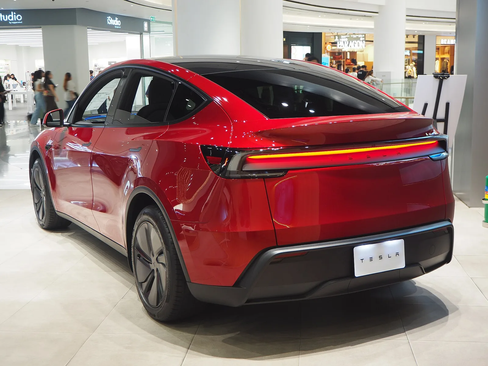
▲ 전시장에 놓인 붉은색 모델 Y 후면. Commons 파일 설명은 2025년형 주니퍼 롱레인지 RWD이며, 사진만으로 연식·사양을 확정하지는 않는다. 이번 인도 실적과 직접 관련은 없다 ⓒ Chanokchon (Wikimedia Commons, CC BY-SA 4.0)
4. 발표 전 추정치와 비교 — 6만 대 갈린 전망, 결과는 가장 높은 추정 바깥
9월 30일 쓴 사전 분석에서 월가 추정은 421,758~482,000대로 약 6만 대(60,242대) 벌어져 있었고, 컨센서스는 출처별로 449,000~466,000대였다. 실제 486,532대는 이 모든 숫자보다 위에 있다. 사전 기사에 적어 둔 추정치별로 오차를 계산했다.
| 추정 출처 | 추정치(대) | 실제와의 차이(대) | 차이(%) |
|---|---|---|---|
| 추정 범위 최저(Electrek 집계) | 421,758 | +64,774 | +15.4% |
| 골드만삭스 | 435,000 | +51,532 | +11.8% |
| Visible Alpha 컨센서스 | 449,000~454,000 | +32,532~+37,532 | +7.2~+8.4% |
| 6개 기관 중앙값(Electrek) | 458,000 | +28,532 | +6.2% |
| 테슬라 IR 게시 컨센서스(24명) | 461,974 | +24,558 | +5.3% |
| Bloomberg 컨센서스 | 466,000 | +20,532 | +4.4% |
| UBS | 약 470,000 | +16,532 | +3.5% |
| 바클레이즈 | 475,000 | +11,532 | +2.4% |
| 추정 범위 최고(JP모건) | 482,000 | +4,532 | +0.9% |
사전 기사에서 짚은 대로 2분기에도 컨센서스(406,024대)를 약 74,000대 웃돌았는데, 3분기에도 월가가 다시 낮게 본 셈이다. 두 분기 연속 컨센서스를 상회했다. 사전 분석이 "결과가 컨센서스를 웃돌 가능성과 밑돌 가능성이 모두 열려 있다"고 쓴 것처럼 실제는 웃도는 쪽으로 나왔다. 다만 컨센서스 수치는 매체마다 다르다. The Motley Fool은 발표 후 기사에서 월가 추정을 461,100대로 적었고, Electrek과 Not a Tesla App은 회사 IR 게시 컨센서스 461,974대(24명)를 썼다. 차이는 900대가량이며 조사 시점 차이로 보이지만 어느 쪽이 맞는지 확인하지 못했다. 이 글은 회사 게시값 461,974대를 기준으로 삼는다.
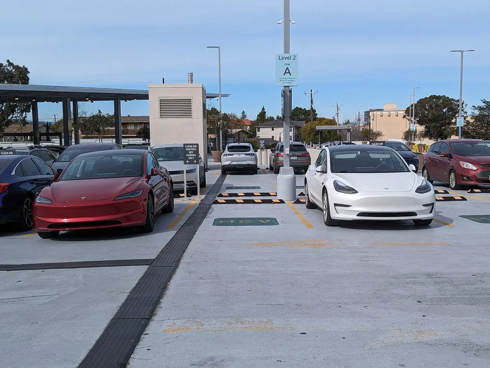
▲ 모델 3(하이랜드, 2024년식) 두 대. 3분기 모델 3·Y 인도는 478,237대로 전년(481,166대)보다 0.6% 적은 수준을 지켰다 ⓒ Mliu92 (Wikimedia Commons, CC BY-SA 4.0)
5. 모델별로 보면 — 3·Y는 컨센서스 넘고, 기타는 밑돌았다
사전 기사는 IR 게시 컨센서스에서 모델 3·Y가 약 450,712대, 기타 모델이 약 11,285대로 잡혀 있다고 정리했다(Drive Tesla Canada·Teslanorth 보도, 당시 IR 원문은 열지 못했다). 실제와 비교하면 총량이 컨센서스를 넘은 것은 전부 모델 3·Y 덕이다.
| 구분 | 3분기 실제 | 사전 컨센서스 | 컨센서스 대비 | 2025년 3분기 | 전년 대비 |
|---|---|---|---|---|---|
| 모델 3·Y | 478,237 | 450,712 | +27,525(+6.1%) | 481,166 | -0.6% |
| 기타 모델 | 8,295 | 11,285 | -2,990(-26.5%) | 15,933 | -47.9% |
| 합계 | 486,532 | 461,974 | +24,558(+5.3%) | 497,099 | -2.1% |
모델 3·Y와 기타의 컨센서스 합(450,712+11,285=461,997)은 전체 컨센서스 461,974와 23대 차이가 나는데, 항목별로 답한 애널리스트 수가 달라서 생기는 오차로 보인다(추정). 기타 모델 인도는 1분기 16,130대, 2분기 12,364대, 3분기 8,295대로 세 분기 연속 줄었다(1분기 수치는 검색 보도, 2분기 수치는 Electrek 기준). Not a Tesla App은 이 감소를 모델 S·X 단종 영향으로 설명했고, 사이버트럭과 세미가 지금의 기타 모델을 이끈다고 전했다. 기타 모델 생산은 7,004대로 전년 3분기(11,624대)보다 39.7% 적다.
5-1. 모델 3·Y 비중 추이
이 글에서 3분기 구성을 직접 확인한 세 분기(2025년 3분기, 2026년 2·3분기)를 나란히 놓았다. 비중은 "해당 차종군 인도÷전체 인도"로 카프리즘이 계산했다. 2026년 1분기와 2025년 2분기는 차종군별 인도를 이번 조사에서 8-K로 확인하지 못해 뺐다.
| 분기 | 모델 3·Y 인도 | 3·Y 비중 | 기타 인도 | 기타 비중 |
|---|---|---|---|---|
| 2025년 3분기 | 481,166 | 96.8% | 15,933 | 3.2% |
| 2026년 2분기 | 467,762 | 97.4% | 12,364 | 2.6% |
| 2026년 3분기 | 478,237 | 98.3% | 8,295 | 1.7% |
3·Y 비중은 96.8%에서 97.4%, 98.3%로 올랐다. 다만 이는 3·Y가 더 팔려서가 아니라(전년 대비 -0.6%) 기타가 줄어든 효과가 크다. 3·Y 인도는 2분기 대비 +2.2%, 기타 인도는 -32.9%다. 사이버트럭 쪽 가격 동향은 사이버트럭 가격 인상 기사를 참고할 수 있다(이번 3분기 인도량과의 연관성은 확인하지 못했다).
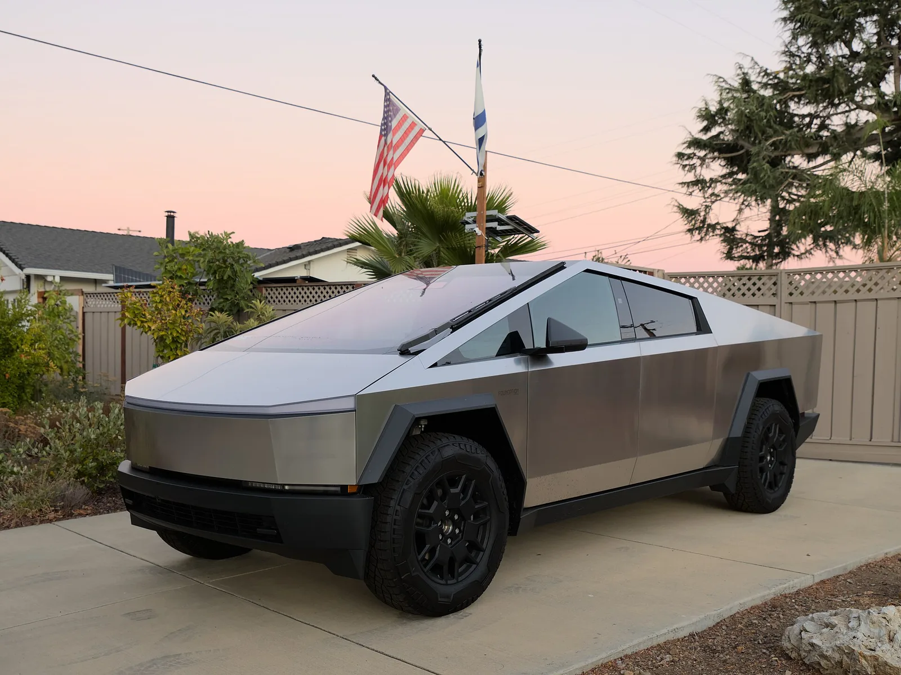
▲ 황혼 무렵 주택가 진입로의 사이버트럭. Commons 파일명은 샌호제이 촬영 파운데이션 시리즈로 적혀 있으나 사진만으로 사양을 확정하지는 않는다 ⓒ Dllu (Wikimedia Commons, CC BY-SA 4.0)
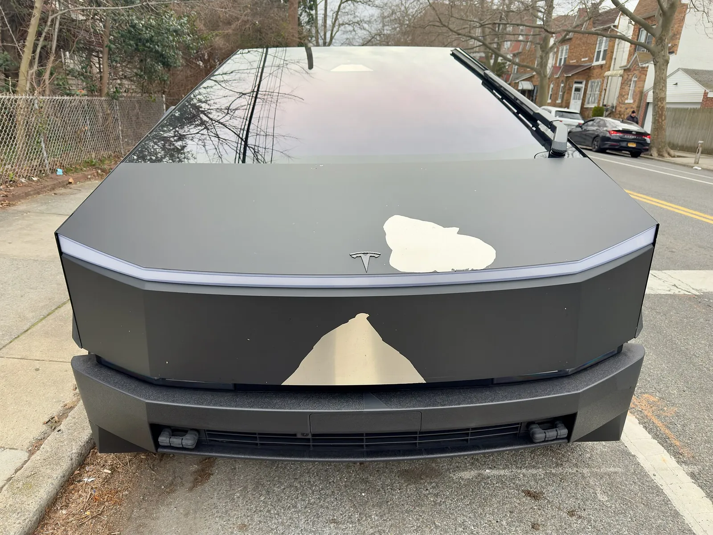
▲ 사이버트럭 전면. 기타 모델(사이버트럭·세미·모델 S·X 재고) 인도는 8,295대로 전년 대비 절반 가까이 감소했다. 사진 속 차량의 상태는 이 실적과 무관하다 ⓒ Oleg Yunakov (Wikimedia Commons, CC BY-SA 4.0)
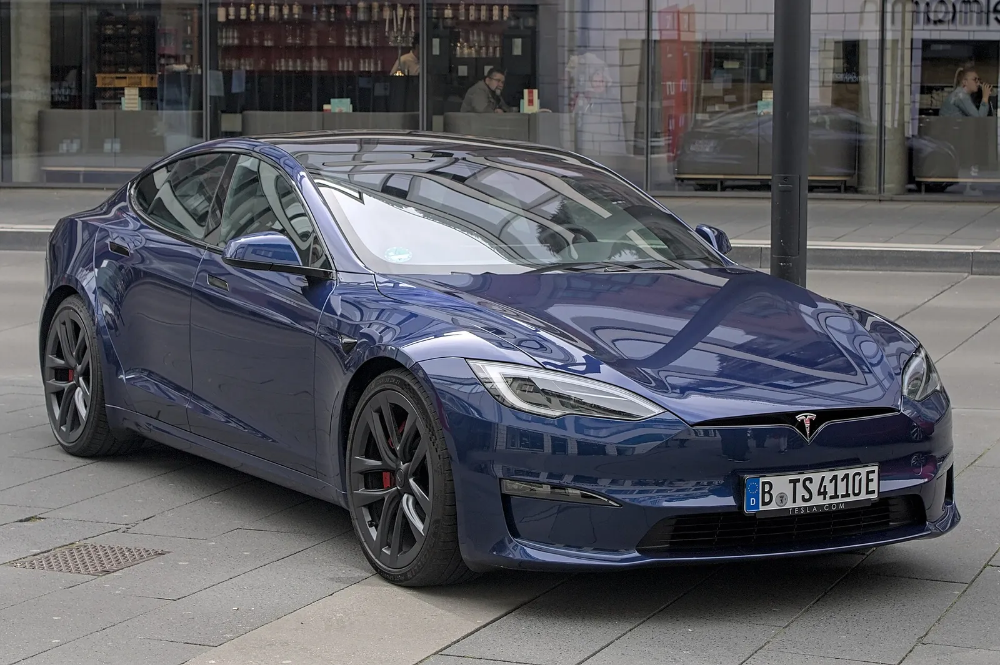
▲ 모델 S 플레이드(독일 촬영). 기타 모델 감소는 S·X 단종 영향이라고 Not a Tesla App이 설명했다 ⓒ Alexander-93 (Wikimedia Commons, CC BY-SA 4.0)
6. 에너지 저장 13.7GWh — 인도는 웃고 저장은 아쉬웠다
차량 인도가 컨센서스를 넘은 반면 에너지 저장 배치는 기대에 못 미쳤다. 사전 기사에서 컨센서스는 15.9GWh, UBS는 16.9GWh였고, 실제는 13.7GWh다.
| 기준 | 수치 | 3분기 13.7GWh와의 차이 |
|---|---|---|
| 2025년 3분기(당시 역대 최대) | 12.5 | 실제가 +9.6% |
| 2026년 2분기 | 13.5 | 실제가 +1.5% |
| 2025년 4분기(Electrek이 언급한 직전 기록) | 14.2 | 실제가 -3.5%(-0.5GWh) |
| 컨센서스(사전 기사) | 15.9 | 실제가 -13.8%(-2.2GWh) |
| UBS 추정(사전 기사) | 16.9 | 실제가 -18.9%(-3.2GWh) |
전년 동기보다는 늘었지만(+9.6%) 직전 분기 대비로는 사실상 제자리(+0.2GWh)다. 8-K는 저장 배치량 사유를 따로 설명하지 않는다. 이번에 다시 확인한 Electrek과 Not a Tesla App 보도도 "전년·직전 분기보다는 늘었지만 기대에는 2.2GWh 못 미쳤다"고 사실만 전할 뿐 미달 이유를 밝히지 않았다. 또 Electrek은 이번 13.7GWh가 2025년 4분기의 14.2GWh에는 못 미친다고 적어, 3분기가 역대 최대 분기는 아니다(위 표 계산: 13.7÷14.2-1=-3.5%). 따라서 컨센서스를 밑돈 이유는 여전히 확인되지 않았고, 이 부분은 10월 21일 실적 발표에서 설명을 들어야 할 대목이다. 저장 설비 쪽 소식은 메가팩 3 양산 시작 기사에서 다뤘다.
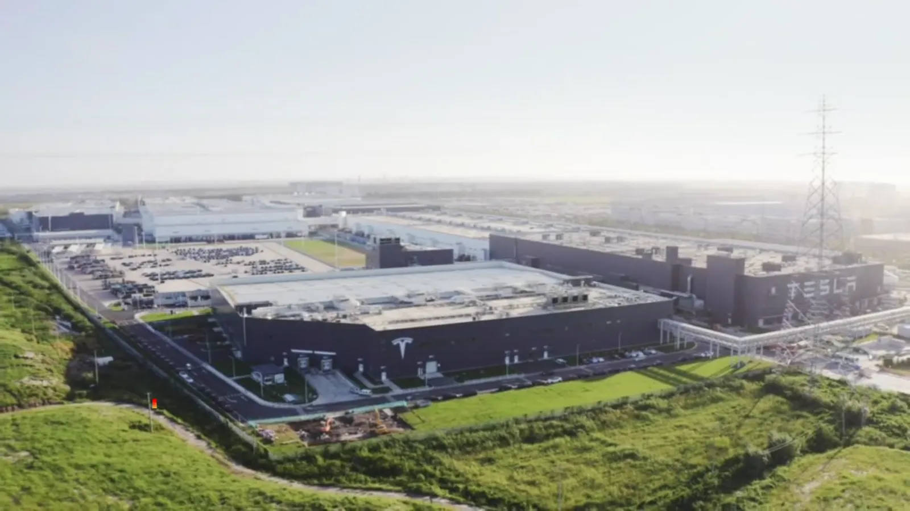
▲ 테슬라 기가팩토리 상하이. Electrek은 상하이발 수출이 중국 내수 부진을 메우고 있다고 평했다(기자 견해) ⓒ China News Service (Wikimedia Commons, CC BY 3.0)
7. 왜 늘었나 — 매체 설명과 확인하지 못한 부분
Electrek의 프레드 램버트 기자는 "높은 휘발유 값이 이번 실적에 큰 몫을 하고 있다(High gas prices are doing a lot of the work)"고 썼고, "상하이 수출이 중국 내 소매 부진을 메운다"고 덧붙였다. 이는 기사 저자의 해석이며 테슬라가 8-K에서 판매 사유를 밝힌 것은 아니다. 카프리즘이 확인한 사실과 확인하지 못한 것을 구분하면 다음과 같다.
| 항목 | 내용 | 성격 |
|---|---|---|
| 총 인도·생산·모델별·저장 배치 | SEC 8-K 수치 | 공식 확인(카프리즘이 8-K 직접 열람) |
| 컨센서스 461,974대(24명) | Electrek·Not a Tesla App 인용, 회사 IR 게시 | 2차 보도, IR 원문 접속 제한(403) |
| 세액공제 종료 전 수요가 전년 기저 부풀림 | Electrek·Not a Tesla App | 매체 설명 |
| 고유가·상하이 수출이 판매 견인 | Electrek 칼럼 | 기자 견해 |
| 국가별·지역별 인도량 | 8-K에 없음 | 확인하지 못함 |
| 중국 9월 CPCA 수치·유럽 3분기 합계(ACEA)·미국 분기 추정(Cox) | 10월 3일 기준 신뢰할 만한 원문을 열지 못함 | 확인하지 못함 |
| 재고 일수·분기말 재고 | 테슬라 미공개 | 확인하지 못함 |
| CNBC 보도 원문 | 접속 제한(403) | 열지 못함 |
7-1. 지역별로 확인되는 조각들
8-K에는 지역별 인도가 없으므로 3분기를 지역별로 완성할 수는 없다. 대신 7~8월 중국·미국·유럽에서 이미 공개된 수치를 모았다. 9월 수치는 아직 나오지 않았거나 확인하지 못했다.
| 지역 | 확인된 내용 | 출처·한계 |
|---|---|---|
| 중국(상하이 공장) | 8월 도매 86,166대(+3.6%) = 내수 소매 50,047대(-12.4%) + 수출 36,119대(+38.7%). 7월은 소매 27,249대·수출 66,330대. 7~8월 합계 소매 77,296대, 수출 102,449대(수출 비중 57.0%) | CPCA 자료를 인용한 CarNewsChina(9월 8일). 9월은 확인하지 못함 |
| 중국 1~8월 누계 | 소매 316,251대, 수출 331,443대(+114.7%). 수출이 도매의 51.2%(전년 동기 29.9%) | 같은 기사 |
| 미국 | 8월 약 40,816대, 전년 대비 -26% | Electrek 9월 28일 기사 인용(원 집계처 미확인). 3분기 합계는 확인하지 못함 |
| 유럽 | Electrek 편집장 프레드 램버트가 8월 25일 X에서 분기 누적 등록이 "추적 이래 최저" 수준이라고 언급. 7월 노르웨이 24대(-97.1%)·스페인 131대(-81.3%) 반면 프랑스 +86%·덴마크 +52% | Basenor 인용 보도. 분기 말 집중 인도가 있어 최종 합계는 다를 수 있고 ACEA 3분기 합계는 확인하지 못함 |
중국 소매는 8월에 줄었지만 수출이 늘며 상하이 도매는 전년보다 늘었다. 7~8월 합계로 보면 도매 179,745대의 57.0%가 수출이다(합계 계산: 소매 77,296+수출 102,449). 이는 Electrek이 말한 "상하이 수출이 중국 내 부진을 메운다"는 해석과 같은 방향이다. 다만 도매·수출은 고객 인도가 아니라 공장 출하 기준이라 3분기 글로벌 인도와 곧바로 맞출 수는 없다. 미국은 세액공제 종료 이후 8월 판매가 줄었는데도 합계가 컨센서스를 웃돈 점이 눈에 띄고, 유럽은 국가별로 엇갈린다. 이 세 지역의 3분기 합계가 나오기 전에는 어느 지역이 초과분을 만들었는지 단정할 수 없다.
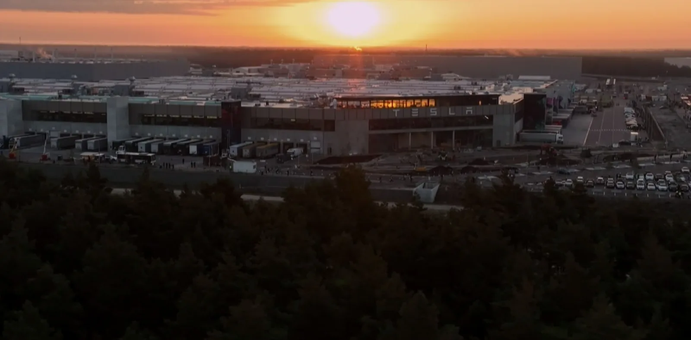
▲ 일몰 무렵 드론으로 촬영된 기가팩토리 베를린-브란덴부르크. 촬영 연도는 확정하지 않으며 이번 분기 유럽 판매와 직접 관련은 없다 ⓒ MEHR8000 (Wikimedia Commons, CC BY-SA 4.0)
The Motley Fool은 이번 인도 발표 후 주가가 약 4.8% 올라 370.59달러 선에서 거래됐다고 전했다(Motley Fool 인용, 카프리즘이 별도 시세로 확인하지 못한 수치이며 발표 직후 시점 보도). 이 매체는 "지금 같은 밸류에이션의 주가는 완전 자율주행 로보택시와 휴머노이드 로봇이 미래"라는 의견도 냈다. 사전 기사에서 소개한 이 매체의 기준선과 비교하면 인도량 485,000대는 실제(486,532대)가 1,532대 넘었고, 생산 추정 약 487,000대는 실제(464,391대)가 22,609대(4.6%) 낮았다. 재고 15일 수준이라는 기준은 테슬라가 재고 수치를 공개하지 않아 충족 여부를 판단할 수 없었다.
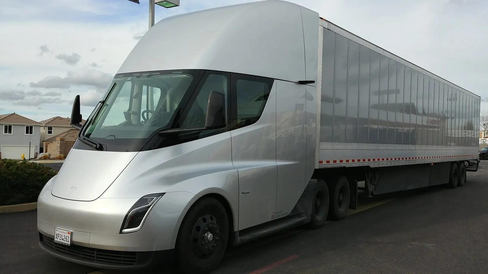
▲ 테슬라 세미. 사이버트럭과 함께 현재 기타 모델 인도를 이끄는 차종으로 소개된다(Not a Tesla App) ⓒ Korbitr (Wikimedia Commons, 퍼블릭 도메인)
8. 한국 독자에게는 — 국내 인도량은 따로 나오지 않는다
테슬라 8-K는 국가별 인도량을 공개하지 않는다. 그래서 이번 486,532대 중 한국 몫은 확인할 수 없다. 대신 국내 판매는 한국수입자동차협회(KAIDA) 등록 통계로 볼 수 있다. 카프리즘이 앞서 정리한 기사에 따르면 테슬라는 7월 수입차 판매 1만237대로 6개월 연속 1위였고(모델 Y가 그랜저를 제친 기사), 8월에는 1만 400대로 7개월 연속 1위였다(8월 수입차 시장 기사). 9월 KAIDA 통계는 10월 3일 현재 나오지 않았다(2025년 9월분은 10월 10일에 보도됐다). 그래서 3분기 합계는 낼 수 없고, 7·8월을 전년 같은 달과 비교했다.
8-1. 전년 대비 월별 한국 판매
| 월 | 2025년 | 2026년 | 증감률 |
|---|---|---|---|
| 7월 | 7,357 | 10,237 | +39.1% |
| 8월 | 7,974 | 10,400 | +30.4% |
| 7~8월 합계 | 15,331 | 20,637 | +34.6% |
| 9월 | 9,069 | 미발표(확인하지 못함) | - |
| 3분기 합계 | 24,400 | - | - |
증감률은 (2026년÷2025년-1)로 계산했다(10,237÷7,357=1.391, 10,400÷7,974=1.304, 20,637÷15,331=1.346). 2025년 수치는 7월 7,357대·8월 7,974대·9월 9,069대(합 24,400대)이고, 2026년 7·8월은 앞서 기사와 같다. 9월에 3,764대만 등록돼도 2026년 3분기 합계가 전년(24,400대)을 넘는데, 7·8월 월 판매가 이미 1만 대를 넘었으므로 사실상 넘는 쪽이 유력하다(추정). 1~8월 누계도 2026년 76,776대로 전년 34,543대 대비 +122.3%다. 이 숫자는 글로벌 인도(고객 인도 기준)가 아니라 한국 신규 등록 기준이라 시점과 범위가 다르다. 9월에는 테슬라가 자체 예산으로 최대 215만 원을 할인한 프로그램도 있어 영향이 있었는지 9월 통계가 나오면 볼 만하다(추정).
국내에서는 가을 제품 라인업도 움직였다. 신형 모델 3 퍼포먼스는 저온 복합 413km로 환경 인증을 마쳤다(모델 3 퍼포먼스 국내 인증 기사). 글로벌에서 모델 3·Y가 인도의 98.3%를 차지한다는 이번 결과는 한국 시장도 모델 3·Y 중심이라는 점과 같은 방향이다. 다만 국내 판매 비중을 3분기 글로벌 수치와 직접 연결할 근거는 없다.
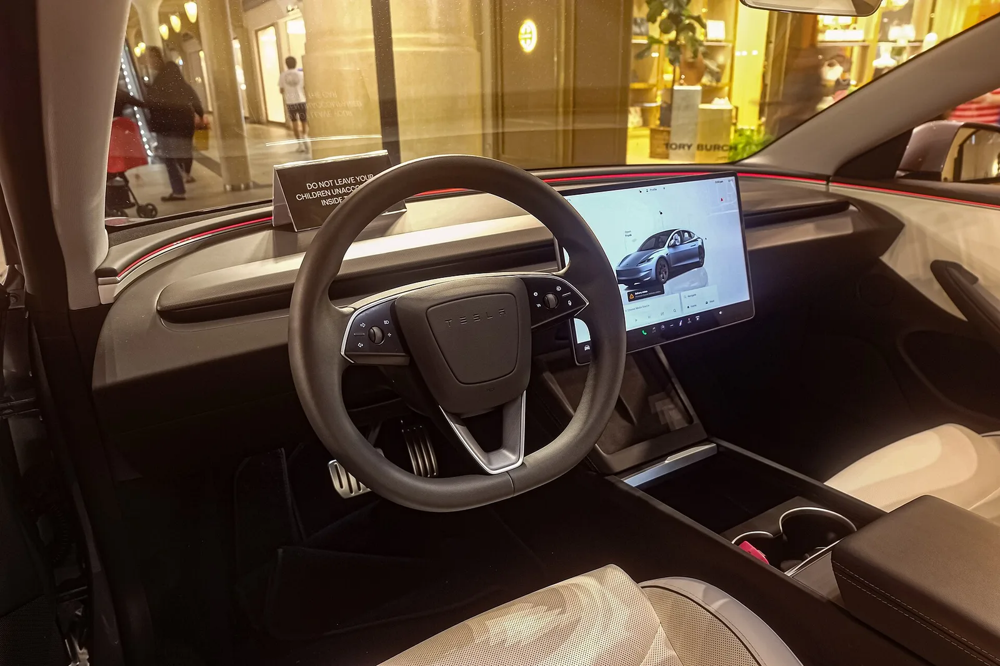
▲ 모델 3 하이랜드 계열로 보이는 전시차 실내. Commons 파일 설명은 퍼포먼스 사양이지만 사진만으로 사양을 확정하지는 않으며, 국내 인증 차량과 같은 사양이라는 뜻은 아니다 ⓒ Ethan Llamas (Wikimedia Commons, CC BY-SA 4.0)
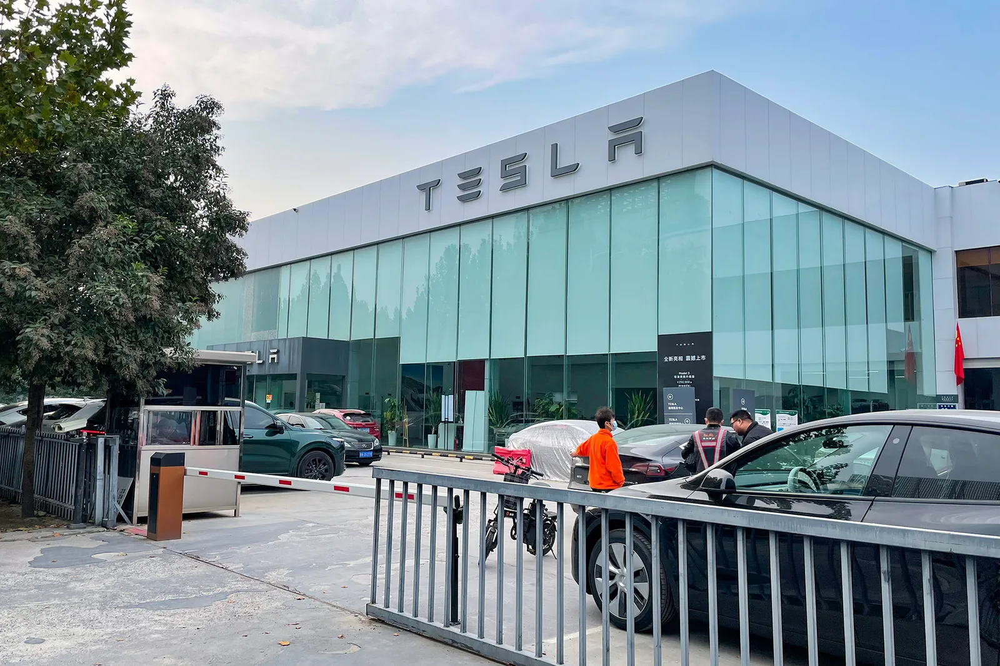
▲ 중국 정저우의 테슬라 전시장 겸 인도 센터(2021년 촬영). 중국 소매 부진이 이번 실적의 변수로 거론된다(Electrek 견해) ⓒ Windmemories (Wikimedia Commons, CC BY-SA 4.0)
✅ 체크포인트 — 10월 21일 실적 발표에서 확인할 것
- 회사가 밝힌 인도 호조 요인(가격 정책, 지역별 수요)
- 에너지 저장 13.7GWh가 컨센서스를 밑돈 이유
- 매출·마진: 인도 증가가 이익으로 이어졌는지(2분기 마진 급락 기사 참고)
- 재고 증감은 8-K 생산-인도 격차로만 추정했으므로 공식 재고 수치가 나오는지
- 9월 KAIDA 한국 판매(2025년 9월 9,069대와 비교)와 중국 CPCA 9월·유럽 ACEA 분기 합계
테슬라는 2026년 3분기 실적을 10월 21일(수) 장 마감 후 발표하고, 경영진 Q&A 웹캐스트는 중부시간 오후 4시 30분에 연다고 8-K에서 밝혔다.
9. 요약
테슬라 3분기 인도 486,532대는 컨센서스(461,974대)를 24,558대(5.3%) 웃돌았고, 사전 기사의 가장 높은 추정(482,000대)도 넘었다. 전년 497,099대보다는 2.1% 적지만 2분기보다는 1.3% 늘었고 1~3분기 누적은 +8.8%다.
생산 464,391대보다 22,141대 더 팔아 2분기(28,368대)에 이어 재고를 줄였다. 1분기에 쌓인 50,363대가 2·3분기에 사실상 상쇄돼 누적 격차는 146대다(카프리즘 계산, 실제 재고와 같지는 않음). 반면 기타 모델은 -47.9%, 에너지 저장은 컨센서스보다 2.2GWh 부족했다.
한국 몫은 8-K에 없어 확인할 수 없다. 국내는 KAIDA 월별 통계가 별도 기준이며 7·8월 합계는 전년 대비 +34.6%(20,637대, 카프리즘 계산)다. 다음 확인 지점은 10월 21일 실적 발표다.